Result type: detections_animal, image: images/batch_1/2024-02-10_Prologis02WildMile--SYFW0028.JPG, max conf: 0.515
Result type: detections_animal, image: images/batch_1/2024-02-10_Reveal002WildMile--SYFW0123.JPG, max conf: 0.851

Result type: detections_animal, image: images/batch_2/2024-03-06_RevealCamWildMile--PICT0112.JPG, max conf: 0.641

Result type: detections_animal, image: images/batch_2/2024-03-06_RevealCamWildMile--PICT0308.JPG, max conf: 0.835
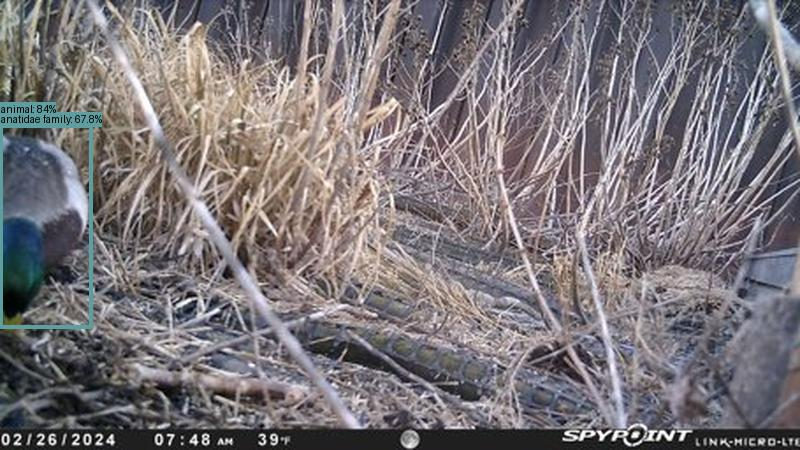Result type: detections_animal, image: images/batch_2/2024-03-06_RevealCamWildMile--PICT0380.JPG, max conf: 0.743

Result type: detections_animal, image: images/batch_2/2024-03-06_RevealCamWildMile--PICT0794.JPG, max conf: 0.787

Result type: detections_animal, image: images/batch_2/2024-03-06_RevealCamWildMile--PICT0876.JPG, max conf: 0.922

Result type: detections_animal, image: images/batch_2/2024-03-06_RevealCamWildMile--PICT0906.JPG, max conf: 0.765

Result type: detections_animal, image: images/batch_2/2024-03-23_WildMileNorth--SYFW1751.JPG, max conf: 0.821

Result type: detections_animal, image: images/batch_2/2024-03-23_WildMileNorth--SYFW2263.JPG, max conf: 0.915

Result type: detections_animal, image: images/batch_2/2024-03-23_WildMileNorth--SYFW2271.JPG, max conf: 0.657

Result type: detections_animal, image: images/batch_2/2024-04-13_ZoneD--PICT0162.JPG, max conf: 0.836

Result type: detections_animal, image: images/batch_3/2024-05-12_Prologis--SYEW5715.JPG, max conf: 0.929

Result type: detections_animal, image: images/batch_3/2024-05-12_Prologis--SYEW5813.JPG, max conf: 0.821

Result type: detections_animal, image: images/batch_3/2024-05-12_Prologis--SYEW5844.JPG, max conf: 0.917

Result type: detections_animal, image: images/batch_3/2024-05-12_Prologis--SYEW5882.JPG, max conf: 0.931

Result type: detections_animal, image: images/batch_3/2024-05-12_Prologis--SYEW5904.JPG, max conf: 0.828

Result type: detections_animal, image: images/batch_3/2024-05-12_Prologis--SYEW5906.JPG, max conf: 0.860

Result type: detections_animal, image: images/batch_3/2024-05-12_Prologis--SYEW5913.JPG, max conf: 0.925

Result type: detections_animal, image: images/batch_3/2024-05-12_Prologis--SYEW5945.JPG, max conf: 0.923

Result type: detections_animal, image: images/batch_3/2024-05-12_Prologis--SYEW5952.JPG, max conf: 0.923

Result type: detections_animal, image: images/batch_3/2024-05-12_Prologis--SYEW5967.JPG, max conf: 0.841

Result type: detections_animal, image: images/batch_3/2024-05-12_Prologis--SYEW6009.JPG, max conf: 0.908

Result type: detections_animal, image: images/batch_3/2024-05-12_Prologis--SYEW6033.JPG, max conf: 0.915

Result type: detections_animal, image: images/batch_3/2024-05-12_Prologis--SYEW6096.JPG, max conf: 0.918

Result type: detections_animal, image: images/batch_3/2024-05-12_Prologis--SYEW6120.JPG, max conf: 0.845

Result type: detections_animal, image: images/batch_3/2024-05-12_Prologis--SYEW6168.JPG, max conf: 0.699

Result type: detections_animal, image: images/batch_3/2024-05-12_Prologis--SYEW6175.JPG, max conf: 0.942

Result type: detections_animal, image: images/batch_3/2024-05-12_Prologis--SYEW6201.JPG, max conf: 0.884

Result type: detections_animal, image: images/batch_3/2024-05-12_Prologis--SYEW6884.JPG, max conf: 0.824

Result type: detections_animal, image: images/batch_3/2024-05-12_Prologis--SYEW6937.JPG, max conf: 0.910

Result type: detections_animal, image: images/batch_4/2024-05-12_Prologis--SYEW0085.JPG, max conf: 0.937

Result type: detections_animal, image: images/batch_4/2024-05-12_Prologis--SYEW0192.JPG, max conf: 0.935

Result type: detections_animal, image: images/batch_4/2024-05-12_Prologis--SYEW0222.JPG, max conf: 0.920

Result type: detections_animal, image: images/batch_4/2024-05-12_Prologis--SYEW0274.JPG, max conf: 0.932

Result type: detections_animal, image: images/batch_4/2024-05-12_Prologis--SYEW0311.JPG, max conf: 0.895

Result type: detections_animal, image: images/batch_4/2024-05-12_Prologis--SYEW0340.JPG, max conf: 0.907

Result type: detections_animal, image: images/batch_4/2024-05-12_Prologis--SYEW0403.JPG, max conf: 0.855

Result type: detections_animal, image: images/batch_4/2024-05-12_Prologis--SYEW0415.JPG, max conf: 0.895

Result type: detections_animal, image: images/batch_4/2024-05-12_Prologis--SYEW0421.JPG, max conf: 0.931

Result type: detections_animal, image: images/batch_4/2024-05-12_Prologis--SYEW0479.JPG, max conf: 0.951

Result type: detections_animal, image: images/batch_4/2024-05-12_Prologis--SYEW0494.JPG, max conf: 0.822

Result type: detections_animal, image: images/batch_4/2024-05-12_Prologis--SYEW0499.JPG, max conf: 0.926

Result type: detections_animal, image: images/batch_4/2024-05-12_Prologis--SYEW0517.JPG, max conf: 0.902

Result type: detections_animal, image: images/batch_4/2024-05-12_Prologis--SYEW0521.JPG, max conf: 0.918

Result type: detections_animal, image: images/batch_4/2024-05-12_Prologis--SYEW0523.JPG, max conf: 0.854

Result type: detections_animal, image: images/batch_4/2024-05-12_Prologis--SYEW0574.JPG, max conf: 0.922

Result type: detections_animal, image: images/batch_4/2024-05-12_Prologis--SYEW0590.JPG, max conf: 0.913

Result type: detections_animal, image: images/batch_4/2024-05-12_Prologis--SYEW0632.JPG, max conf: 0.874

Result type: detections_animal, image: images/batch_4/2024-05-12_Prologis--SYEW0659.JPG, max conf: 0.935

Result type: detections_animal, image: images/batch_4/2024-05-12_Prologis--SYEW0684.JPG, max conf: 0.904

Result type: detections_animal, image: images/batch_4/2024-05-12_Prologis--SYEW0770.JPG, max conf: 0.840

Result type: detections_animal, image: images/batch_4/2024-05-12_Prologis--SYEW0782.JPG, max conf: 0.894

Result type: detections_animal, image: images/batch_4/2024-05-12_Prologis--SYEW1296.JPG, max conf: 0.718

Result type: detections_animal, image: images/batch_4/2024-05-12_Prologis--SYEW1389.JPG, max conf: 0.890

Result type: detections_animal, image: images/batch_4/2024-05-12_Prologis--SYEW1407.JPG, max conf: 0.931

Result type: detections_animal, image: images/batch_4/2024-05-12_Prologis--SYEW1434.JPG, max conf: 0.920

Result type: detections_animal, image: images/batch_4/2024-05-12_Prologis--SYEW1513.JPG, max conf: 0.906

Result type: detections_animal, image: images/batch_4/2024-05-12_Prologis--SYEW1536.JPG, max conf: 0.690

Result type: detections_animal, image: images/batch_4/2024-05-12_Prologis--SYEW1561.JPG, max conf: 0.822

Result type: detections_animal, image: images/batch_4/2024-05-12_Prologis--SYEW1596.JPG, max conf: 0.876

Result type: detections_animal, image: images/batch_4/2024-05-12_Prologis--SYEW1653.JPG, max conf: 0.851

Result type: detections_animal, image: images/batch_4/2024-05-12_Prologis--SYEW1689.JPG, max conf: 0.876

Result type: detections_animal, image: images/batch_4/2024-05-12_Prologis--SYEW1698.JPG, max conf: 0.643

Result type: detections_animal, image: images/batch_4/2024-05-12_Prologis--SYEW1700.JPG, max conf: 0.929

Result type: detections_animal, image: images/batch_4/2024-05-12_Prologis--SYEW1776.JPG, max conf: 0.926

Result type: detections_animal, image: images/batch_4/2024-05-12_Prologis--SYEW1823.JPG, max conf: 0.733

Result type: detections_animal, image: images/batch_4/2024-05-12_Prologis--SYEW1901.JPG, max conf: 0.959

Result type: detections_animal, image: images/batch_4/2024-05-12_Prologis--SYEW2004.JPG, max conf: 0.803

Result type: detections_animal, image: images/batch_4/2024-05-12_Prologis--SYEW2025.JPG, max conf: 0.950

Result type: detections_animal, image: images/batch_4/2024-05-12_Prologis--SYEW2054.JPG, max conf: 0.867

Result type: detections_animal, image: images/batch_4/2024-05-12_Prologis--SYEW2130.JPG, max conf: 0.803

Result type: detections_animal, image: images/batch_4/2024-05-12_Prologis--SYEW2304.JPG, max conf: 0.894

Result type: detections_animal, image: images/batch_4/2024-05-12_Prologis--SYEW2311.JPG, max conf: 0.864

Result type: detections_animal, image: images/batch_4/2024-05-12_Prologis--SYEW2397.JPG, max conf: 0.863

Result type: detections_animal, image: images/batch_4/2024-05-12_Prologis--SYEW2963.JPG, max conf: 0.922

Result type: detections_animal, image: images/batch_4/2024-05-12_Prologis--SYEW2993.JPG, max conf: 0.932

Result type: detections_animal, image: images/batch_4/2024-05-12_Prologis--SYEW3003.JPG, max conf: 0.940

Result type: detections_animal, image: images/batch_4/2024-05-12_Prologis--SYEW3006.JPG, max conf: 0.723

Result type: detections_animal, image: images/batch_4/2024-05-12_Prologis--SYEW3075.JPG, max conf: 0.768

Result type: detections_animal, image: images/batch_4/2024-05-12_Prologis--SYEW7037.JPG, max conf: 0.604

Result type: detections_animal, image: images/batch_4/2024-05-12_Prologis--SYEW7040.JPG, max conf: 0.607

Result type: detections_animal, image: images/batch_4/2024-05-12_Prologis--SYEW7056.JPG, max conf: 0.896

Result type: detections_animal, image: images/batch_4/2024-05-12_Prologis--SYEW7131.JPG, max conf: 0.903

Result type: detections_animal, image: images/batch_4/2024-05-12_Prologis--SYEW7453.JPG, max conf: 0.946

Result type: detections_animal, image: images/batch_4/2024-05-12_Prologis--SYEW7593.JPG, max conf: 0.946

Result type: detections_animal, image: images/batch_4/2024-05-12_Prologis--SYEW7609.JPG, max conf: 0.944

Result type: detections_animal, image: images/batch_4/2024-05-12_Prologis--SYEW7657.JPG, max conf: 0.680

Result type: detections_animal, image: images/batch_4/2024-05-12_Prologis--SYEW7778.JPG, max conf: 0.841

Result type: detections_animal, image: images/batch_4/2024-05-12_Prologis--SYEW7780.JPG, max conf: 0.886

Result type: detections_animal, image: images/batch_4/2024-05-12_Prologis--SYEW7841.JPG, max conf: 0.957

Result type: detections_animal, image: images/batch_4/2024-05-12_Prologis--SYEW7862.JPG, max conf: 0.799

Result type: detections_animal, image: images/batch_4/2024-05-12_Prologis--SYEW7889.JPG, max conf: 0.848

Result type: detections_animal, image: images/batch_4/2024-05-12_Prologis--SYEW7908.JPG, max conf: 0.860

Result type: detections_animal, image: images/batch_4/2024-05-12_Prologis--SYEW7935.JPG, max conf: 0.737

Result type: detections_animal, image: images/batch_4/2024-05-12_Prologis--SYEW7953.JPG, max conf: 0.915

Result type: detections_animal, image: images/batch_4/2024-05-12_Prologis--SYEW7970.JPG, max conf: 0.914

Result type: detections_animal, image: images/batch_4/2024-05-12_Prologis--SYEW8000.JPG, max conf: 0.902

Result type: detections_animal, image: images/batch_4/2024-05-12_Prologis--SYEW8021.JPG, max conf: 0.960

Result type: detections_animal, image: images/batch_4/2024-05-12_Prologis--SYEW8093.JPG, max conf: 0.947

Result type: detections_animal, image: images/batch_4/2024-05-12_Prologis--SYEW8114.JPG, max conf: 0.631

Result type: detections_animal, image: images/batch_4/2024-05-12_Prologis--SYEW8139.JPG, max conf: 0.881

Result type: detections_animal, image: images/batch_4/2024-05-12_Prologis--SYEW8245.JPG, max conf: 0.923

Result type: detections_animal, image: images/batch_4/2024-05-12_Prologis--SYEW8280.JPG, max conf: 0.885

Result type: detections_animal, image: images/batch_4/2024-05-12_Prologis--SYEW8287.JPG, max conf: 0.916

Result type: detections_animal, image: images/batch_4/2024-05-12_Prologis--SYEW8320.JPG, max conf: 0.879

Result type: detections_animal, image: images/batch_4/2024-05-12_Prologis--SYEW8322.JPG, max conf: 0.859

Result type: detections_animal, image: images/batch_4/2024-05-12_Prologis--SYEW8325.JPG, max conf: 0.879

Result type: detections_animal, image: images/batch_4/2024-05-12_Prologis--SYEW8347.JPG, max conf: 0.510
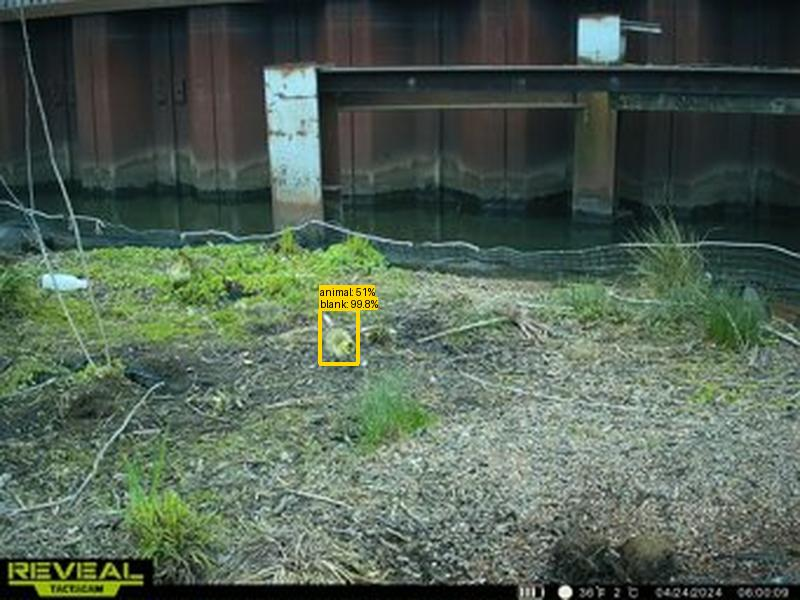Result type: detections_animal, image: images/batch_4/2024-05-12_Prologis--SYEW8356.JPG, max conf: 0.924

Result type: detections_animal, image: images/batch_4/2024-05-12_Prologis--SYEW8362.JPG, max conf: 0.923

Result type: detections_animal, image: images/batch_4/2024-05-12_Prologis--SYEW8380.JPG, max conf: 0.912

Result type: detections_animal, image: images/batch_4/2024-05-12_Prologis--SYEW8587.JPG, max conf: 0.847

Result type: detections_animal, image: images/batch_4/2024-05-12_Prologis--SYEW8614.JPG, max conf: 0.891

Result type: detections_animal, image: images/batch_4/2024-05-12_Prologis--SYEW8621.JPG, max conf: 0.855

Result type: detections_animal, image: images/batch_4/2024-05-12_Prologis--SYEW8630.JPG, max conf: 0.877

Result type: detections_animal, image: images/batch_4/2024-05-12_Prologis--SYEW8642.JPG, max conf: 0.766

Result type: detections_animal, image: images/batch_4/2024-05-12_Prologis--SYEW8645.JPG, max conf: 0.806

Result type: detections_animal, image: images/batch_4/2024-05-12_Prologis--SYEW8698.JPG, max conf: 0.833

Result type: detections_animal, image: images/batch_4/2024-05-12_Prologis--SYEW8784.JPG, max conf: 0.921

Result type: detections_animal, image: images/batch_4/2024-05-12_Prologis--SYEW8792.JPG, max conf: 0.684

Result type: detections_animal, image: images/batch_4/2024-05-12_Prologis--SYEW8793.JPG, max conf: 0.772

Result type: detections_animal, image: images/batch_4/2024-05-12_Prologis--SYEW8810.JPG, max conf: 0.822

Result type: detections_animal, image: images/batch_4/2024-05-12_Prologis--SYEW8858.JPG, max conf: 0.881

Result type: detections_animal, image: images/batch_4/2024-05-12_Prologis--SYEW8873.JPG, max conf: 0.922

Result type: detections_animal, image: images/batch_4/2024-05-12_Prologis--SYEW8897.JPG, max conf: 0.898

Result type: detections_animal, image: images/batch_4/2024-05-12_Prologis--SYEW8904.JPG, max conf: 0.940

Result type: detections_animal, image: images/batch_4/2024-05-12_Prologis--SYEW9027.JPG, max conf: 0.931

Result type: detections_animal, image: images/batch_4/2024-05-12_Prologis--SYEW9044.JPG, max conf: 0.910

Result type: detections_animal, image: images/batch_4/2024-05-12_Prologis--SYEW9068.JPG, max conf: 0.526
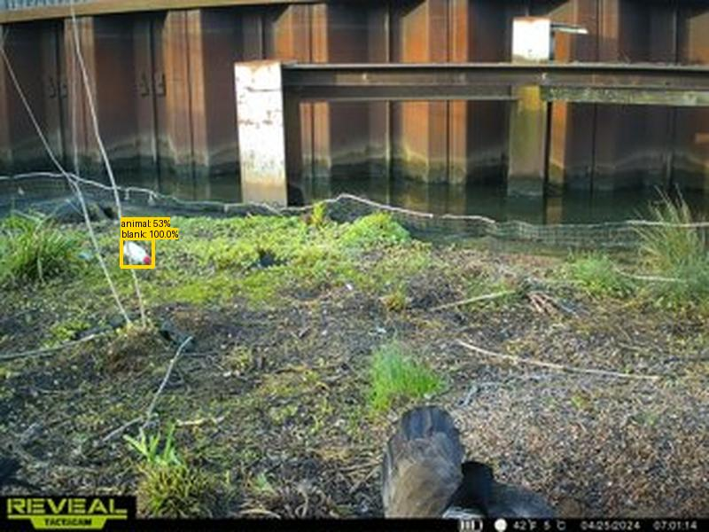Result type: detections_animal, image: images/batch_4/2024-05-12_Prologis--SYEW9083.JPG, max conf: 0.952

Result type: detections_animal, image: images/batch_4/2024-05-12_Prologis--SYEW9357.JPG, max conf: 0.541
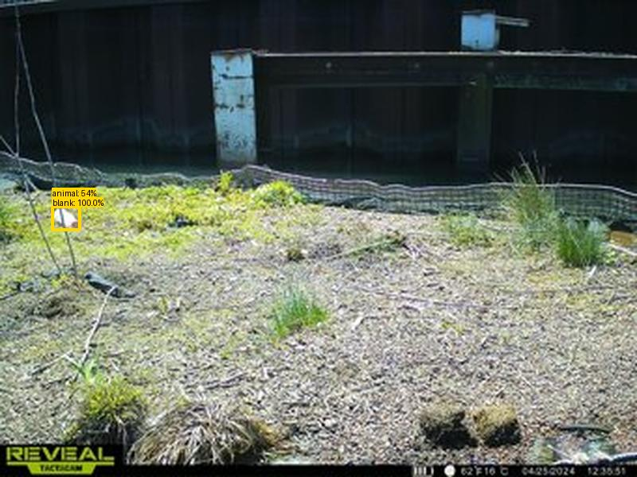Result type: detections_animal, image: images/batch_4/2024-05-12_Prologis--SYEW9631.JPG, max conf: 0.537
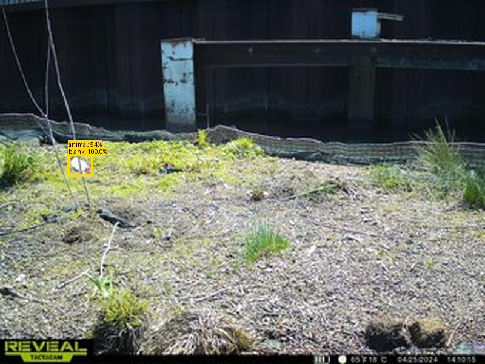Result type: detections_animal, image: images/batch_4/2024-05-12_Prologis--SYEW9808.JPG, max conf: 0.933

Result type: detections_animal, image: images/batch_4/2024-05-12_Prologis--SYEW9859.JPG, max conf: 0.916

Result type: detections_animal, image: images/batch_4/2024-05-12_Prologis--SYEW9865.JPG, max conf: 0.840

Result type: detections_animal, image: images/batch_5/2024-05-16_WM_Boardwalk_D--PICT0408.JPG, max conf: 0.631
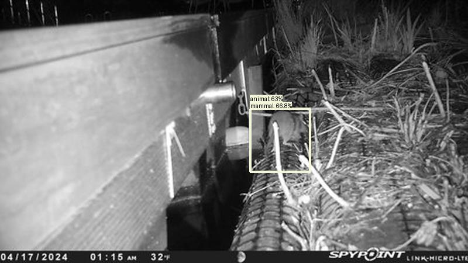Result type: detections_animal, image: images/batch_5/2024-05-16_WM_Boardwalk_D--PICT2863.JPG, max conf: 0.623

Result type: detections_animal, image: images/batch_5/2024-05-16_WM_Boardwalk_D--PICT3017.JPG, max conf: 0.529

Result type: detections_animal, image: images/batch_5/2024-05-16_WM_Boardwalk_D--PICT3345.JPG, max conf: 0.708
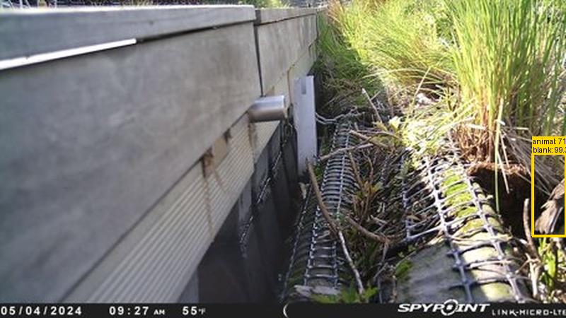Result type: detections_animal, image: images/batch_5/2024-05-16_WM_Boardwalk_D--PICT3517.JPG, max conf: 0.848

Result type: detections_animal, image: images/batch_5/2024-05-16_WM_Boardwalk_D--PICT3658.JPG, max conf: 0.794

Result type: detections_animal, image: images/batch_5/2024-05-16_WM_Boardwalk_D--PICT3687.JPG, max conf: 0.843

Result type: detections_animal, image: images/batch_6/2024-05-25_WM_Boardwalk_D--PICT1132.JPG, max conf: 0.741

Result type: detections_animal, image: images/batch_6/2024-05-25_WM_Boardwalk_D--PICT2086.JPG, max conf: 0.508
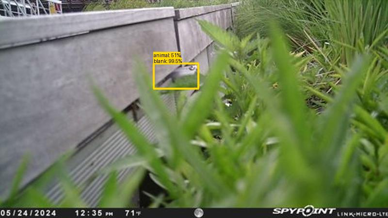Result type: detections_animal, image: images/batch_6/2024-05-25_WM_Boardwalk_G--SYFW0036.JPG, max conf: 0.709

Result type: detections_animal, image: images/batch_6/2024-05-25_WM_Boardwalk_G--SYFW0359.JPG, max conf: 0.748

Result type: detections_animal, image: images/batch_6/2024-05-25_WM_Boardwalk_G--SYFW0498.JPG, max conf: 0.788
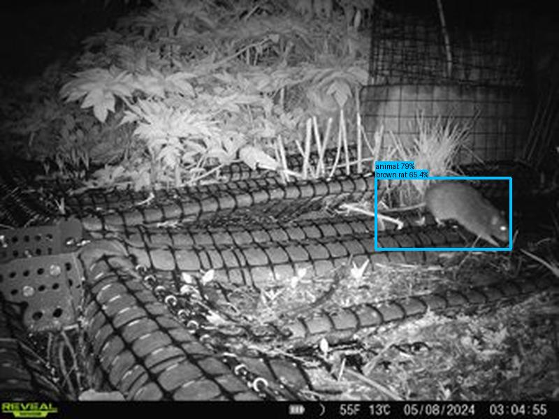Result type: detections_animal, image: images/batch_6/2024-05-25_WM_Boardwalk_G--SYFW0705.JPG, max conf: 0.558

Result type: detections_animal, image: images/batch_6/2024-05-25_WM_Boardwalk_G--SYFW0838.JPG, max conf: 0.671

Result type: detections_animal, image: images/batch_6/2024-05-25_WM_Boardwalk_G--SYFW0949.JPG, max conf: 0.643
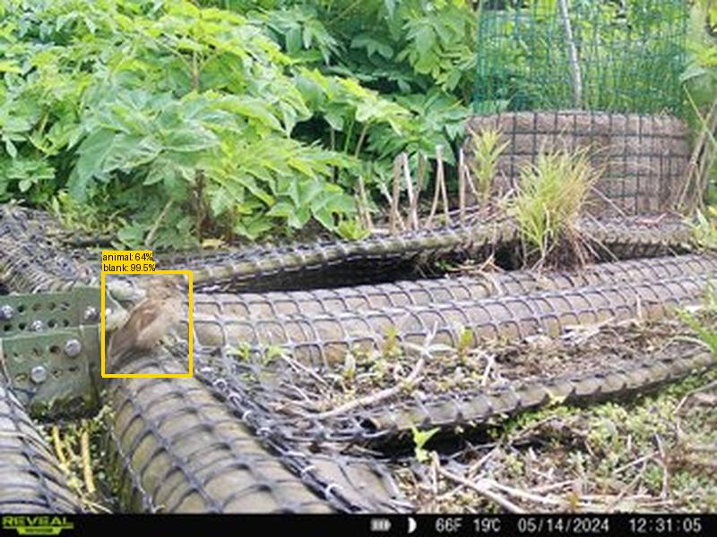Result type: detections_animal, image: images/batch_6/2024-05-25_WM_Boardwalk_G--SYFW0995.JPG, max conf: 0.645

Result type: detections_animal, image: images/batch_6/2024-05-25_WM_Boardwalk_G--SYFW1023.JPG, max conf: 0.654
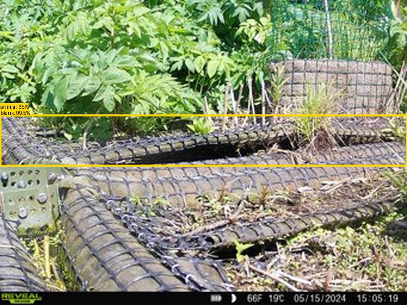Result type: detections_animal, image: images/batch_6/2024-05-25_WM_Boardwalk_G--SYFW1075.JPG, max conf: 0.735

Result type: detections_animal, image: images/batch_6/2024-05-25_WM_Boardwalk_G--SYFW1141.JPG, max conf: 0.794

Result type: detections_animal, image: images/batch_6/2024-05-25_WM_Boardwalk_G--SYFW1269.JPG, max conf: 0.727

Result type: detections_animal, image: images/batch_6/2024-05-25_WM_Boardwalk_G--SYFW1274.JPG, max conf: 0.507

Result type: detections_animal, image: images/batch_6/2024-05-25_WM_Boardwalk_G--SYFW1359.JPG, max conf: 0.860

Result type: detections_animal, image: images/batch_6/2024-05-25_WM_Boardwalk_G--SYFW1373.JPG, max conf: 0.736

Result type: detections_animal, image: images/batch_6/2024-05-25_WM_Boardwalk_G--SYFW1531.JPG, max conf: 0.909
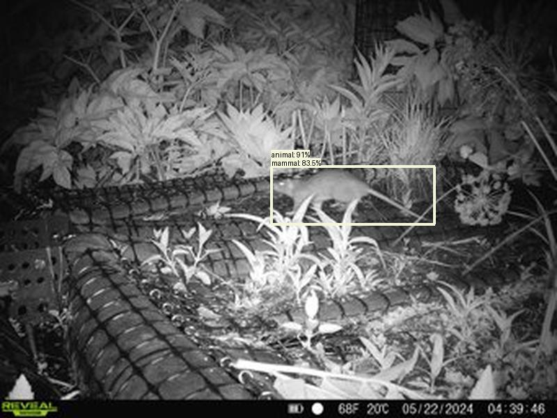Result type: detections_animal, image: images/batch_6/2024-05-25_WM_Boardwalk_G--SYFW1831.JPG, max conf: 0.628

Result type: detections_animal, image: images/batch_6/2024-05-25_WM_Boardwalk_G--SYFW1848.JPG, max conf: 0.524

Result type: detections_animal, image: images/batch_6/2024-05-25_WM_Boardwalk_G--SYFW1852.JPG, max conf: 0.833

Result type: detections_animal, image: images/batch_6/2024-05-25_WM_Boardwalk_G--SYFW1866.JPG, max conf: 0.867

Result type: detections_animal, image: images/batch_6/2024-06-03_UR011--SYFW1669.JPG, max conf: 0.890

Result type: detections_animal, image: images/batch_6/2024-06-03_UR011--SYFW1689.JPG, max conf: 0.750

Result type: detections_animal, image: images/batch_6/2024-06-03_UR011--SYFW1715.JPG, max conf: 0.873

Result type: detections_animal, image: images/batch_6/2024-06-03_UR011--SYFW1719.JPG, max conf: 0.818

Result type: detections_animal, image: images/batch_6/2024-06-03_UR011--SYFW1776.JPG, max conf: 0.867

Result type: detections_animal, image: images/batch_7/2024-06-03_UR011--SYFW0841.JPG, max conf: 0.913

Result type: detections_animal, image: images/batch_7/2024-06-03_UR011--SYFW0884.JPG, max conf: 0.917
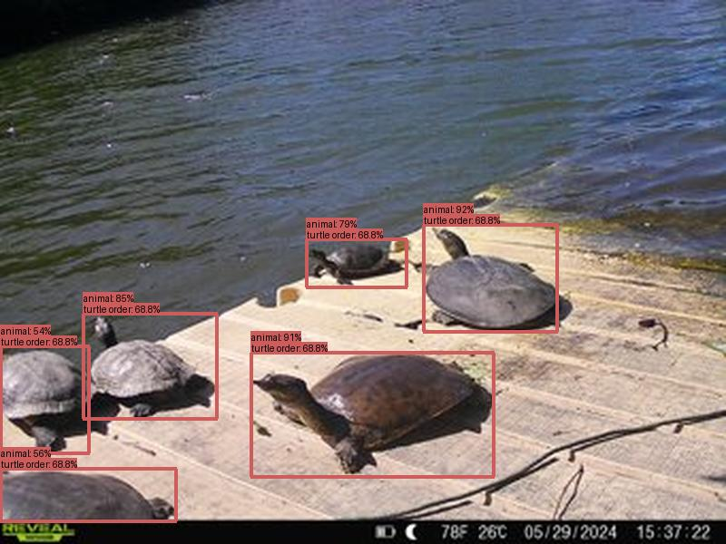Result type: detections_animal, image: images/batch_7/2024-06-03_UR011--SYFW0923.JPG, max conf: 0.858
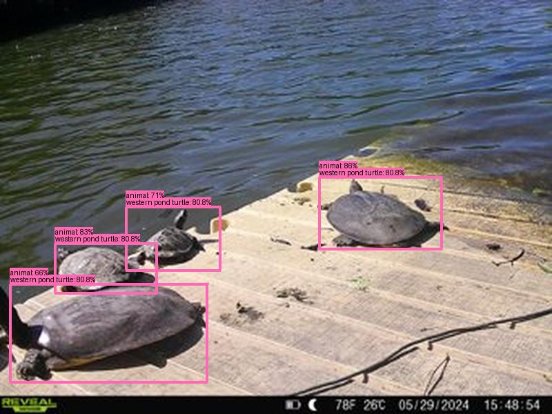Result type: detections_animal, image: images/batch_7/2024-06-03_UR011--SYFW0997.JPG, max conf: 0.869
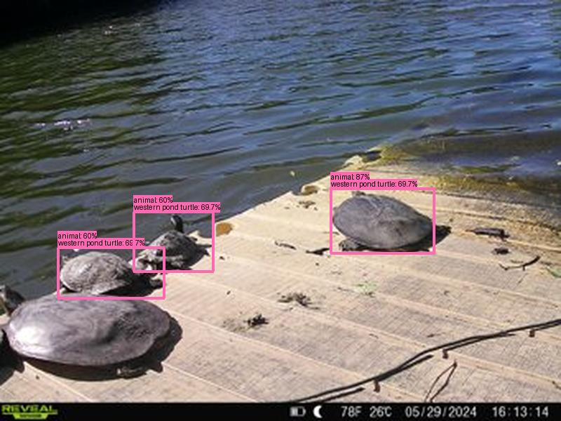Result type: detections_animal, image: images/batch_7/2024-06-03_UR011--SYFW1021.JPG, max conf: 0.851
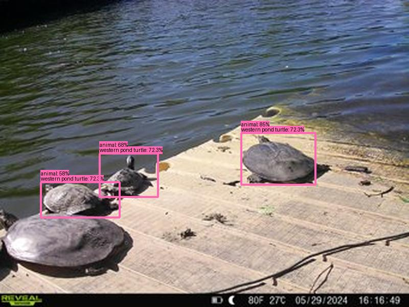Result type: detections_animal, image: images/batch_7/2024-06-03_UR011--SYFW1264.JPG, max conf: 0.802

Result type: detections_animal, image: images/batch_7/2024-06-03_UR011--SYFW1265.JPG, max conf: 0.915

Result type: detections_animal, image: images/batch_7/2024-06-03_UR011--SYFW1373.JPG, max conf: 0.950

Result type: detections_animal, image: images/batch_7/2024-06-03_UR011--SYFW1400.JPG, max conf: 0.965

Result type: detections_animal, image: images/batch_7/2024-06-03_UR011--SYFW1416.JPG, max conf: 0.960

Result type: detections_animal, image: images/batch_7/2024-06-03_UR011--SYFW1429.JPG, max conf: 0.947

Result type: detections_animal, image: images/batch_7/2024-06-03_UR011--SYFW1448.JPG, max conf: 0.958

Result type: detections_animal, image: images/batch_7/2024-06-03_UR011--SYFW1449.JPG, max conf: 0.947

Result type: detections_animal, image: images/batch_7/2024-06-03_UR011--SYFW1469.JPG, max conf: 0.832

Result type: detections_animal, image: images/batch_7/2024-06-03_UR011--SYFW1543.JPG, max conf: 0.889

Result type: detections_animal, image: images/batch_7/2024-06-03_UR011--SYFW1587.JPG, max conf: 0.890

Result type: detections_animal, image: images/batch_7/2024-06-03_UR011--SYFW1628.JPG, max conf: 0.915

Result type: detections_animal, image: images/batch_7/2024-06-03_UR011--SYFW1643.JPG, max conf: 0.734

Result type: detections_animal, image: images/batch_7/2024-06-03_UR011--SYFW1647.JPG, max conf: 0.895

Result type: detections_animal, image: images/batch_7/2024-06-03_UR011--SYFW1897.JPG, max conf: 0.820

Result type: detections_animal, image: images/batch_7/2024-06-03_UR011--SYFW1933.JPG, max conf: 0.937

Result type: detections_animal, image: images/batch_7/2024-06-03_UR011--SYFW1953.JPG, max conf: 0.913

Result type: detections_animal, image: images/batch_7/2024-06-03_UR011--SYFW1984.JPG, max conf: 0.928

Result type: detections_animal, image: images/batch_7/2024-06-03_UR011--SYFW2012.JPG, max conf: 0.951

Result type: detections_animal, image: images/batch_7/2024-06-03_UR011--SYFW2029.JPG, max conf: 0.954

Result type: detections_animal, image: images/batch_7/2024-06-03_UR011--SYFW2073.JPG, max conf: 0.935

Result type: detections_animal, image: images/batch_7/2024-06-03_UR011--SYFW2077.JPG, max conf: 0.756

Result type: detections_animal, image: images/batch_7/2024-06-03_UR011--SYFW2126.JPG, max conf: 0.907

Result type: detections_animal, image: images/batch_7/2024-06-03_UR011--SYFW2161.JPG, max conf: 0.903

Result type: detections_animal, image: images/batch_7/2024-06-03_UR011--SYFW2168.JPG, max conf: 0.927

Result type: detections_animal, image: images/batch_7/2024-06-03_UR011--SYFW2234.JPG, max conf: 0.951

Result type: detections_animal, image: images/batch_7/2024-06-03_UR011--SYFW2258.JPG, max conf: 0.880

Result type: detections_animal, image: images/batch_7/2024-06-03_UR011--SYFW2260.JPG, max conf: 0.917

Result type: detections_animal, image: images/batch_7/2024-06-03_UR011--SYFW2384.JPG, max conf: 0.824

Result type: detections_animal, image: images/batch_7/2024-06-03_UR011--SYFW2425.JPG, max conf: 0.770
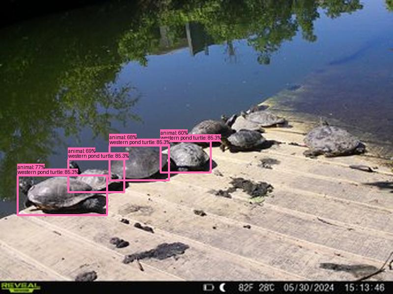Result type: detections_animal, image: images/batch_7/2024-06-03_UR011--SYFW2431.JPG, max conf: 0.869
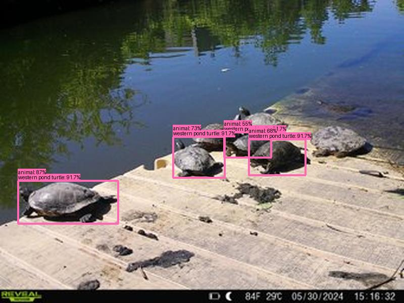Result type: detections_animal, image: images/batch_7/2024-06-03_UR011--SYFW2471.JPG, max conf: 0.777

Result type: detections_animal, image: images/batch_7/2024-06-03_UR011--SYFW2475.JPG, max conf: 0.758
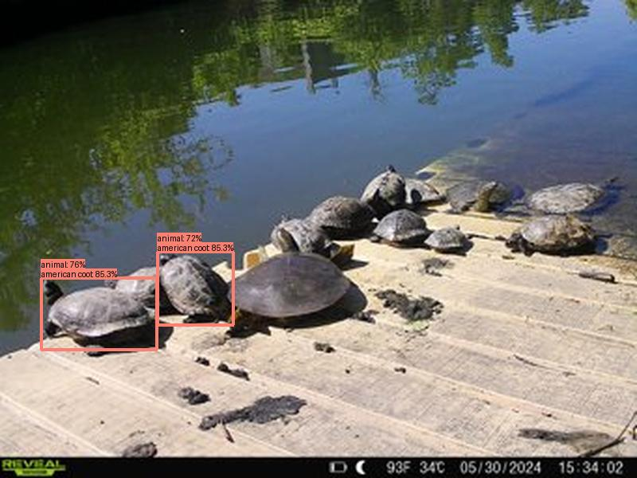Result type: detections_animal, image: images/batch_7/2024-06-03_UR011--SYFW2499.JPG, max conf: 0.727

Result type: detections_animal, image: images/batch_7/2024-06-03_UR011--SYFW2521.JPG, max conf: 0.874
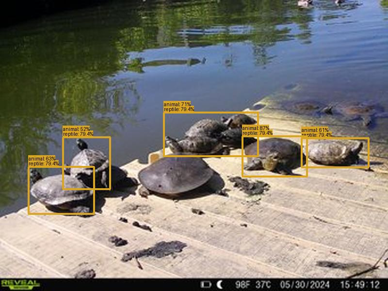Result type: detections_animal, image: images/batch_7/2024-06-03_UR011--SYFW2566.JPG, max conf: 0.847

Result type: detections_animal, image: images/batch_7/2024-06-03_UR011--SYFW2589.JPG, max conf: 0.671
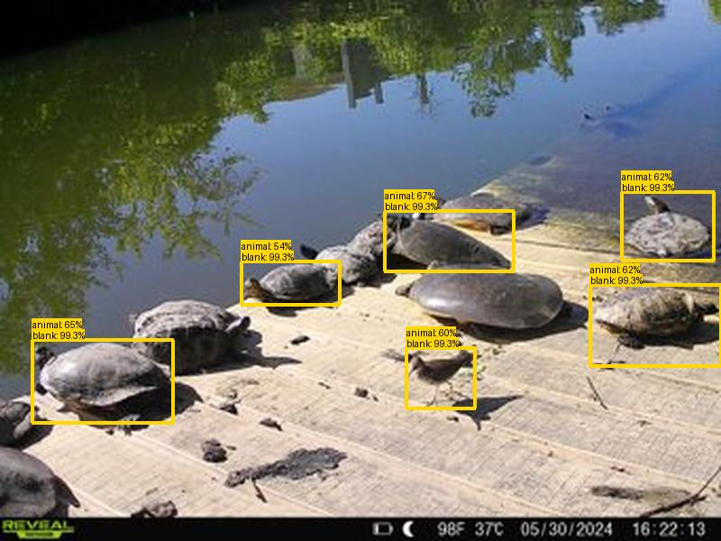Result type: detections_animal, image: images/batch_7/2024-06-03_UR011--SYFW2590.JPG, max conf: 0.807

Result type: detections_animal, image: images/batch_7/2024-06-03_UR011--SYFW2631.JPG, max conf: 0.601

Result type: detections_animal, image: images/batch_7/2024-06-03_UR011--SYFW2641.JPG, max conf: 0.904

Result type: detections_animal, image: images/batch_7/2024-06-03_UR011--SYFW2647.JPG, max conf: 0.802

Result type: detections_animal, image: images/batch_7/2024-06-03_UR011--SYFW2653.JPG, max conf: 0.682

Result type: detections_animal, image: images/batch_7/2024-06-03_UR011--SYFW2661.JPG, max conf: 0.861

Result type: detections_animal, image: images/batch_7/2024-06-03_UR011--SYFW2665.JPG, max conf: 0.855

Result type: detections_animal, image: images/batch_7/2024-06-03_UR011--SYFW2673.JPG, max conf: 0.665

Result type: detections_animal, image: images/batch_7/2024-06-03_UR011--SYFW2685.JPG, max conf: 0.680
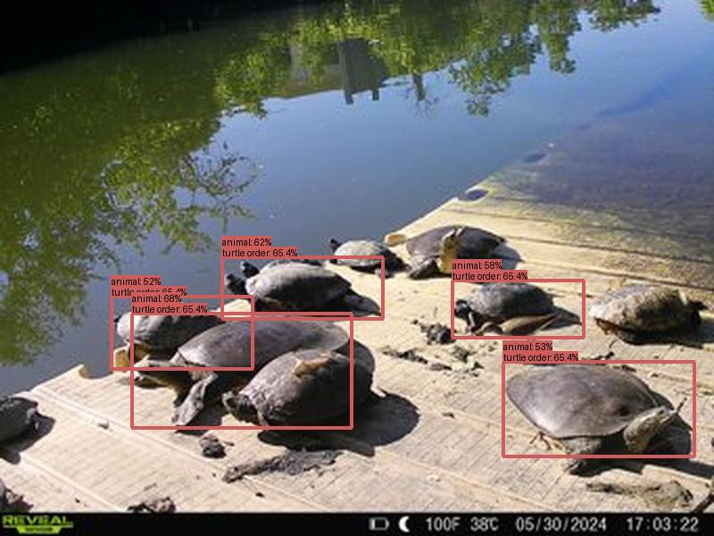Result type: detections_animal, image: images/batch_7/2024-06-03_UR011--SYFW2686.JPG, max conf: 0.702
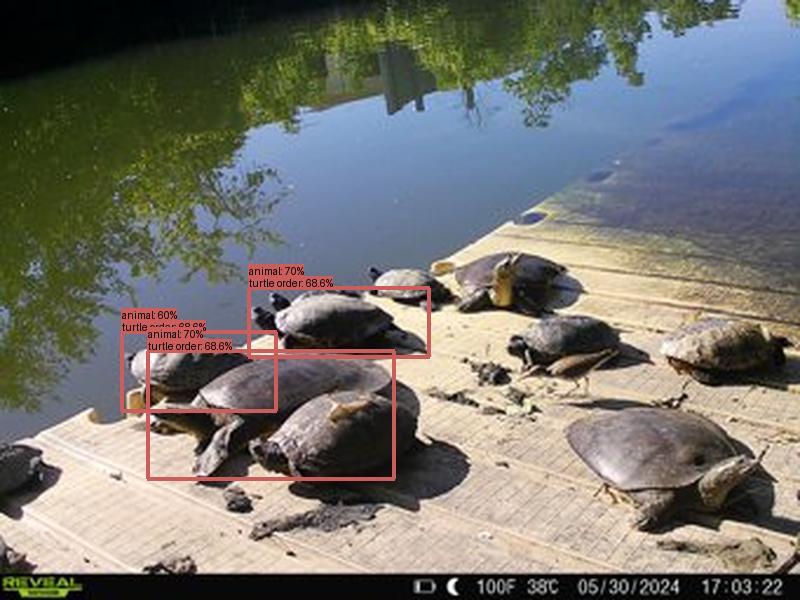Result type: detections_animal, image: images/batch_7/2024-06-03_UR011--SYFW2691.JPG, max conf: 0.756

Result type: detections_animal, image: images/batch_7/2024-06-03_UR011--SYFW2779.JPG, max conf: 0.718

Result type: detections_animal, image: images/batch_7/2024-06-03_UR011--SYFW2827.JPG, max conf: 0.940

Result type: detections_animal, image: images/batch_7/2024-06-03_UR011--SYFW2851.JPG, max conf: 0.849

Result type: detections_animal, image: images/batch_7/2024-06-03_UR011--SYFW2879.JPG, max conf: 0.674

Result type: detections_animal, image: images/batch_7/2024-06-03_UR011--SYFW2922.JPG, max conf: 0.801

Result type: detections_animal, image: images/batch_7/2024-06-03_UR011--SYFW2963.JPG, max conf: 0.943
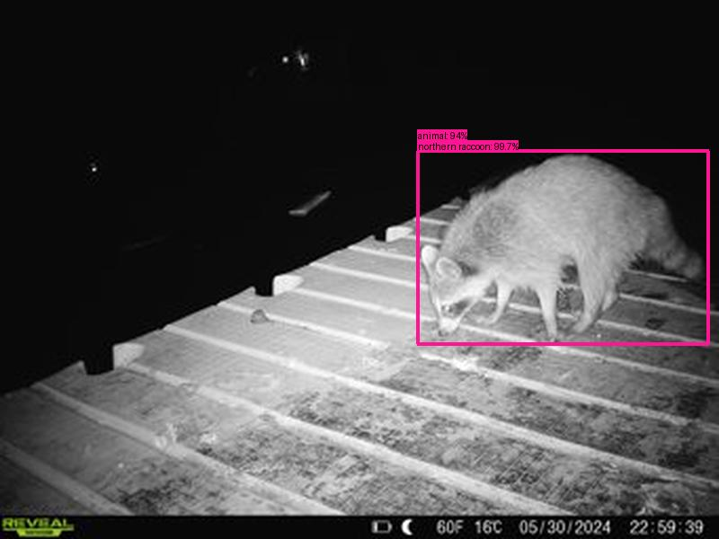Result type: detections_animal, image: images/batch_7/2024-06-03_UR011--SYFW3055.JPG, max conf: 0.795

Result type: detections_animal, image: images/batch_7/2024-06-03_UR011--SYFW3115.JPG, max conf: 0.570

Result type: detections_animal, image: images/batch_7/2024-06-03_UR011--SYFW3194.JPG, max conf: 0.514

Result type: detections_animal, image: images/batch_7/2024-06-03_UR011--SYFW3208.JPG, max conf: 0.746

Result type: detections_animal, image: images/batch_7/2024-06-03_UR011--SYFW3314.JPG, max conf: 0.711

Result type: detections_animal, image: images/batch_7/2024-06-03_UR011--SYFW3322.JPG, max conf: 0.844

Result type: detections_animal, image: images/batch_7/2024-06-03_UR011--SYFW3327.JPG, max conf: 0.696

Result type: detections_animal, image: images/batch_7/2024-06-03_UR011--SYFW3474.JPG, max conf: 0.640

Result type: detections_animal, image: images/batch_7/2024-06-03_UR011--SYFW3494.JPG, max conf: 0.512

Result type: detections_animal, image: images/batch_7/2024-06-03_UR011--SYFW3511.JPG, max conf: 0.930

Result type: detections_animal, image: images/batch_7/2024-06-03_UR011--SYFW3528.JPG, max conf: 0.942

Result type: detections_animal, image: images/batch_7/2024-06-03_UR011--SYFW3543.JPG, max conf: 0.919

Result type: detections_animal, image: images/batch_7/2024-06-03_UR011--SYFW3611.JPG, max conf: 0.959

Result type: detections_animal, image: images/batch_7/2024-06-03_UR011--SYFW3631.JPG, max conf: 0.962

Result type: detections_animal, image: images/batch_7/2024-06-03_UR011--SYFW3674.JPG, max conf: 0.915

Result type: detections_animal, image: images/batch_7/2024-06-03_UR011--SYFW3811.JPG, max conf: 0.666

Result type: detections_animal, image: images/batch_7/2024-06-03_UR011--SYFW3827.JPG, max conf: 0.659

Result type: detections_animal, image: images/batch_7/2024-06-03_UR011--SYFW3830.JPG, max conf: 0.607

Result type: detections_animal, image: images/batch_7/2024-06-03_UR011--SYFW3872.JPG, max conf: 0.889

Result type: detections_animal, image: images/batch_7/2024-06-03_UR011--SYFW3887.JPG, max conf: 0.923

Result type: detections_animal, image: images/batch_7/2024-06-03_UR011--SYFW3919.JPG, max conf: 0.793

Result type: detections_animal, image: images/batch_7/2024-06-03_UR011--SYFW3970.JPG, max conf: 0.851
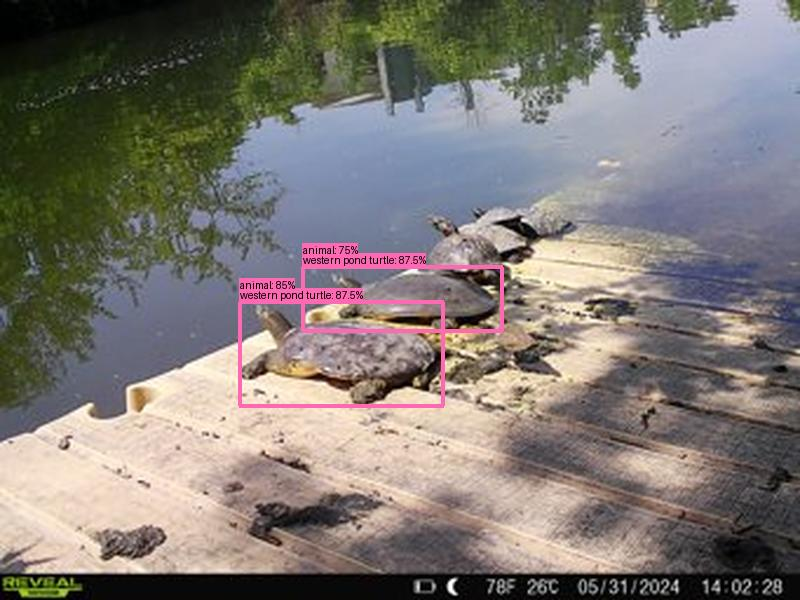Result type: detections_animal, image: images/batch_7/2024-06-03_UR011--SYFW4011.JPG, max conf: 0.882

Result type: detections_animal, image: images/batch_7/2024-06-03_UR011--SYFW4019.JPG, max conf: 0.727

Result type: detections_animal, image: images/batch_7/2024-06-03_UR011--SYFW4025.JPG, max conf: 0.593

Result type: detections_animal, image: images/batch_7/2024-06-03_UR011--SYFW4035.JPG, max conf: 0.649
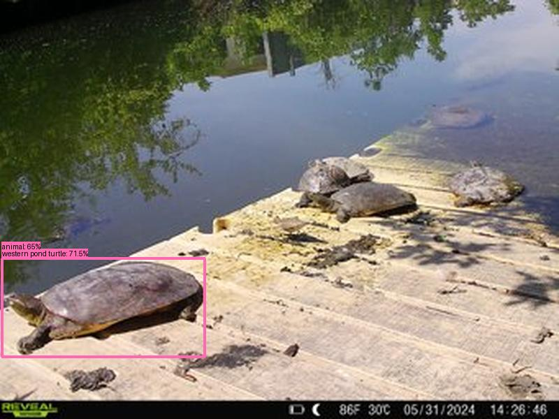Result type: detections_animal, image: images/batch_7/2024-06-03_UR011--SYFW4136.JPG, max conf: 0.837

Result type: detections_animal, image: images/batch_7/2024-06-03_UR011--SYFW4149.JPG, max conf: 0.701

Result type: detections_animal, image: images/batch_7/2024-06-03_UR011--SYFW4159.JPG, max conf: 0.795

Result type: detections_animal, image: images/batch_7/2024-06-03_UR011--SYFW4191.JPG, max conf: 0.692
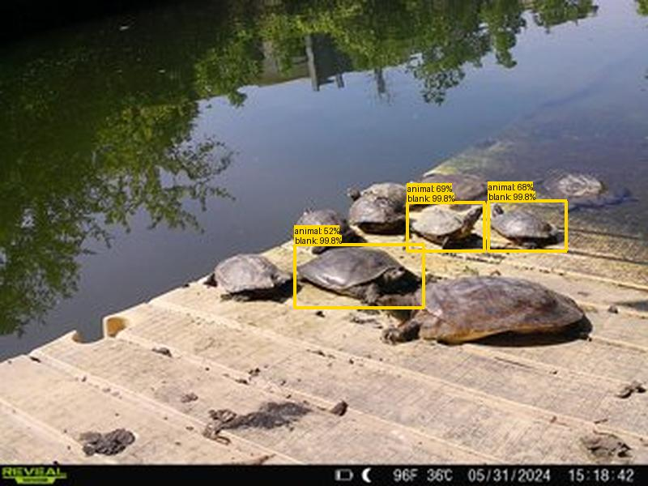Result type: detections_animal, image: images/batch_7/2024-06-03_UR011--SYFW4272.JPG, max conf: 0.858

Result type: detections_animal, image: images/batch_7/2024-06-03_UR011--SYFW4284.JPG, max conf: 0.814
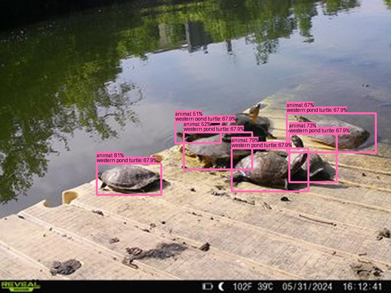Result type: detections_animal, image: images/batch_7/2024-06-03_UR011--SYFW4297.JPG, max conf: 0.763
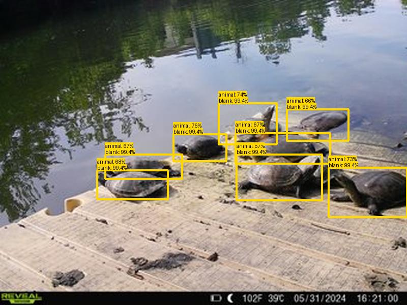Result type: detections_animal, image: images/batch_7/2024-06-03_UR011--SYFW4325.JPG, max conf: 0.844

Result type: detections_animal, image: images/batch_7/2024-06-03_UR011--SYFW4367.JPG, max conf: 0.824
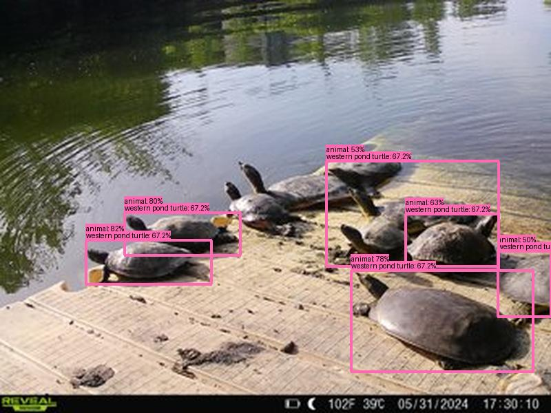Result type: detections_animal, image: images/batch_7/2024-06-03_UR011--SYFW4414.JPG, max conf: 0.853

Result type: detections_animal, image: images/batch_7/2024-06-03_UR011--SYFW4466.JPG, max conf: 0.952

Result type: detections_animal, image: images/batch_7/2024-06-03_UR011--SYFW4524.JPG, max conf: 0.895

Result type: detections_animal, image: images/batch_7/2024-06-03_UR011--SYFW4534.JPG, max conf: 0.934

Result type: detections_animal, image: images/batch_7/2024-06-03_UR011--SYFW4554.JPG, max conf: 0.913

Result type: detections_animal, image: images/batch_7/2024-06-03_UR011--SYFW4612.JPG, max conf: 0.939

Result type: detections_animal, image: images/batch_7/2024-06-03_UR011--SYFW4622.JPG, max conf: 0.935

Result type: detections_animal, image: images/batch_7/2024-06-03_UR011--SYFW4703.JPG, max conf: 0.924

Result type: detections_animal, image: images/batch_7/2024-06-03_UR011--SYFW4733.JPG, max conf: 0.940

Result type: detections_animal, image: images/batch_7/2024-06-03_UR011--SYFW4875.JPG, max conf: 0.882

Result type: detections_animal, image: images/batch_7/2024-06-03_UR011--SYFW4882.JPG, max conf: 0.866

Result type: detections_animal, image: images/batch_8/2024-06-08_WM_Boardwalk_D--PICT3978.JPG, max conf: 0.509
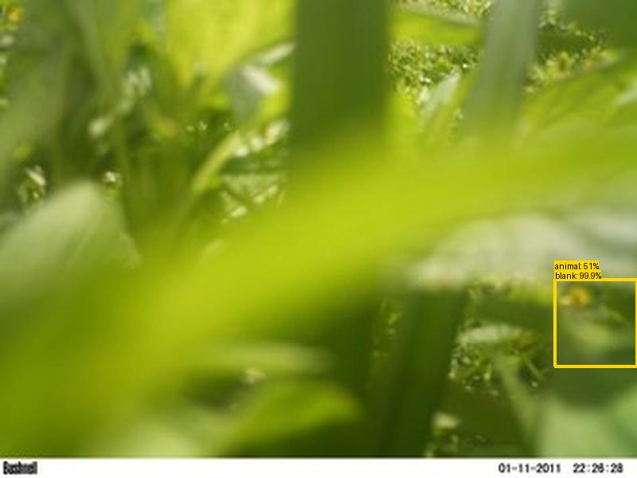Result type: detections_animal, image: images/batch_9/2024-06-18_UR003--DSCF0233.JPG, max conf: 0.864

Result type: detections_animal, image: images/batch_9/2024-06-18_UR003--DSCF0405.JPG, max conf: 0.806

Result type: detections_animal, image: images/batch_9/2024-06-27_UR011--SYFW0032.JPG, max conf: 0.653

Result type: detections_animal, image: images/batch_9/2024-06-27_UR011--SYFW0043.JPG, max conf: 0.927

Result type: detections_animal, image: images/batch_9/2024-06-27_UR011--SYFW0092.JPG, max conf: 0.955

Result type: detections_animal, image: images/batch_9/2024-06-27_UR011--SYFW0121.JPG, max conf: 0.941

Result type: detections_animal, image: images/batch_9/2024-06-27_UR011--SYFW0143.JPG, max conf: 0.855

Result type: detections_animal, image: images/batch_9/2024-06-27_UR011--SYFW0219.JPG, max conf: 0.951

Result type: detections_animal, image: images/batch_9/2024-06-27_UR011--SYFW0241.JPG, max conf: 0.939

Result type: detections_animal, image: images/batch_9/2024-06-27_UR011--SYFW0269.JPG, max conf: 0.918

Result type: detections_animal, image: images/batch_9/2024-06-27_UR011--SYFW0295.JPG, max conf: 0.952

Result type: detections_animal, image: images/batch_9/2024-06-27_UR011--SYFW0299.JPG, max conf: 0.697

Result type: detections_animal, image: images/batch_9/2024-06-27_UR011--SYFW0331.JPG, max conf: 0.755

Result type: detections_animal, image: images/batch_9/2024-06-27_UR011--SYFW0376.JPG, max conf: 0.657

Result type: detections_animal, image: images/batch_9/2024-06-27_UR011--SYFW0388.JPG, max conf: 0.802

Result type: detections_animal, image: images/batch_9/2024-06-27_UR011--SYFW0425.JPG, max conf: 0.941

Result type: detections_animal, image: images/batch_9/2024-06-27_UR011--SYFW0429.JPG, max conf: 0.931
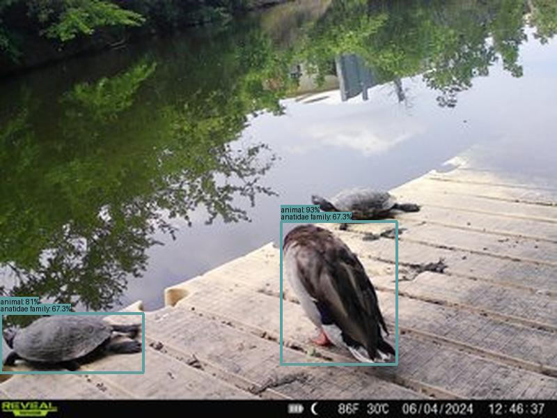Result type: detections_animal, image: images/batch_9/2024-06-27_UR011--SYFW0439.JPG, max conf: 0.916

Result type: detections_animal, image: images/batch_9/2024-06-27_UR011--SYFW0539.JPG, max conf: 0.908
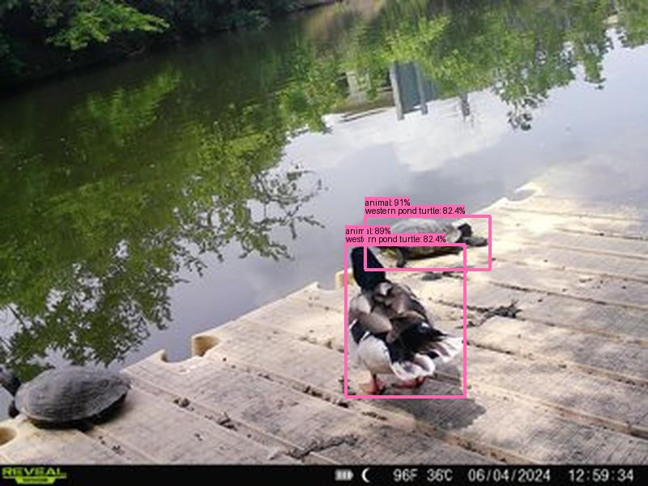Result type: detections_animal, image: images/batch_9/2024-06-27_UR011--SYFW0567.JPG, max conf: 0.827

Result type: detections_animal, image: images/batch_9/2024-06-27_UR011--SYFW0608.JPG, max conf: 0.851

Result type: detections_animal, image: images/batch_9/2024-06-27_UR011--SYFW0644.JPG, max conf: 0.933

Result type: detections_animal, image: images/batch_9/2024-06-27_UR011--SYFW0648.JPG, max conf: 0.950
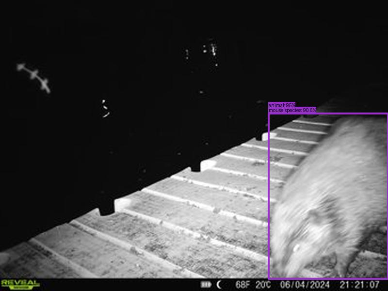Result type: detections_animal, image: images/batch_9/2024-06-27_UR011--SYFW0691.JPG, max conf: 0.898

Result type: detections_animal, image: images/batch_9/2024-06-27_UR011--SYFW0742.JPG, max conf: 0.966

Result type: detections_animal, image: images/batch_9/2024-06-27_UR011--SYFW0749.JPG, max conf: 0.965

Result type: detections_animal, image: images/batch_9/2024-06-27_UR011--SYFW0791.JPG, max conf: 0.970

Result type: detections_animal, image: images/batch_9/2024-06-27_UR011--SYFW0862.JPG, max conf: 0.957

Result type: detections_animal, image: images/batch_9/2024-06-27_UR011--SYFW0902.JPG, max conf: 0.876
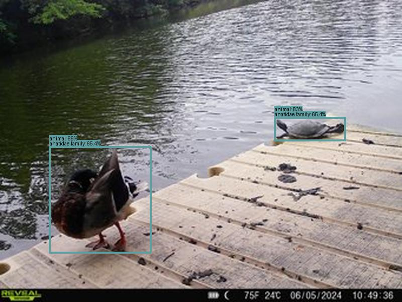Result type: detections_animal, image: images/batch_9/2024-06-27_UR011--SYFW0918.JPG, max conf: 0.770

Result type: detections_animal, image: images/batch_9/2024-06-27_UR011--SYFW0947.JPG, max conf: 0.945

Result type: detections_animal, image: images/batch_9/2024-06-27_UR011--SYFW0967.JPG, max conf: 0.708
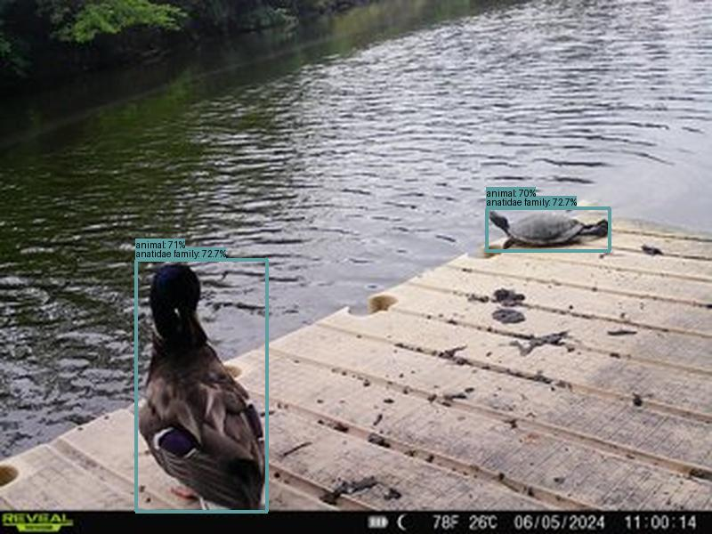Result type: detections_animal, image: images/batch_9/2024-06-27_UR011--SYFW1014.JPG, max conf: 0.838
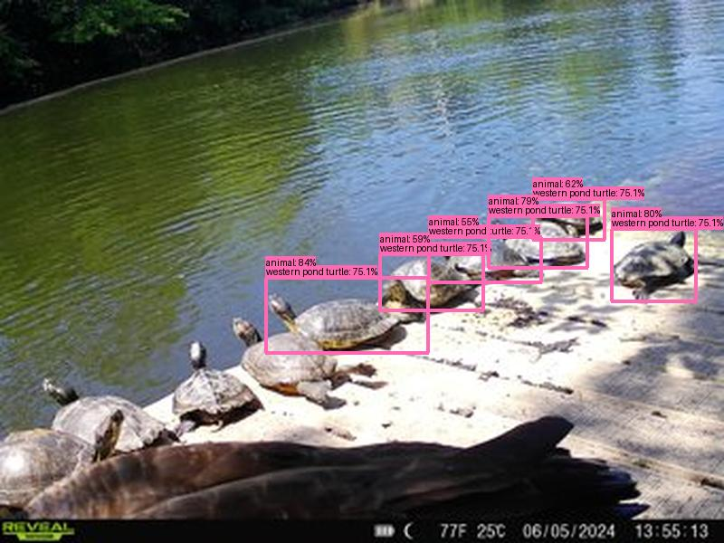Result type: detections_animal, image: images/batch_9/2024-06-27_UR011--SYFW1017.JPG, max conf: 0.807

Result type: detections_animal, image: images/batch_9/2024-06-27_UR011--SYFW1036.JPG, max conf: 0.858
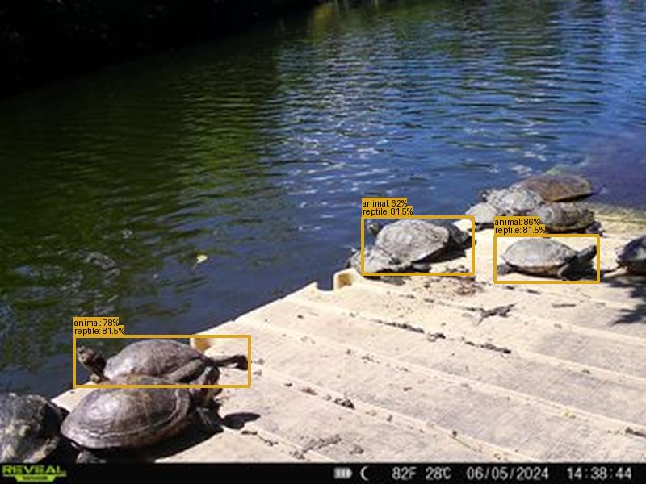Result type: detections_animal, image: images/batch_9/2024-06-27_UR011--SYFW1099.JPG, max conf: 0.862
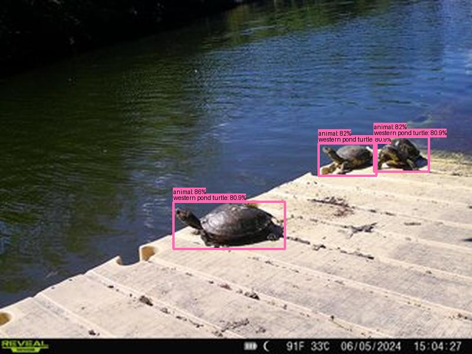Result type: detections_animal, image: images/batch_9/2024-06-27_UR011--SYFW1127.JPG, max conf: 0.817

Result type: detections_animal, image: images/batch_9/2024-06-27_UR011--SYFW1147.JPG, max conf: 0.895
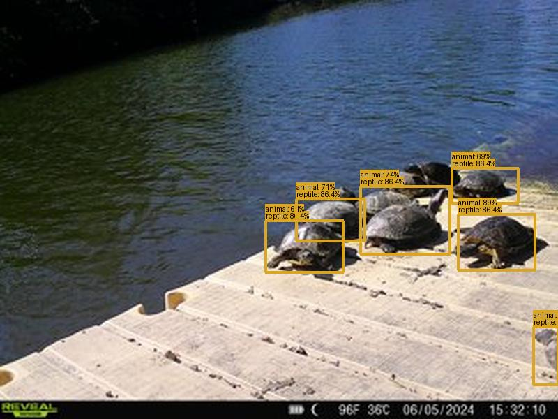Result type: detections_animal, image: images/batch_9/2024-06-27_UR011--SYFW1152.JPG, max conf: 0.843
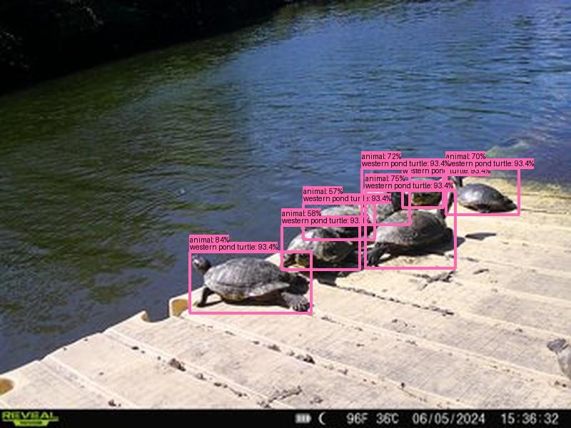Result type: detections_animal, image: images/batch_9/2024-06-27_UR011--SYFW1219.JPG, max conf: 0.690

Result type: detections_animal, image: images/batch_9/2024-06-27_UR011--SYFW1298.JPG, max conf: 0.917

Result type: detections_animal, image: images/batch_9/2024-06-27_UR011--SYFW1307.JPG, max conf: 0.939

Result type: detections_animal, image: images/batch_9/2024-06-27_UR011--SYFW1316.JPG, max conf: 0.891

Result type: detections_animal, image: images/batch_9/2024-06-27_UR011--SYFW1336.JPG, max conf: 0.922

Result type: detections_animal, image: images/batch_9/2024-06-27_UR011--SYFW1527.JPG, max conf: 0.927

Result type: detections_animal, image: images/batch_9/2024-06-27_UR011--SYFW1587.JPG, max conf: 0.883

Result type: detections_animal, image: images/batch_9/2024-06-27_UR011--SYFW2719.JPG, max conf: 0.878